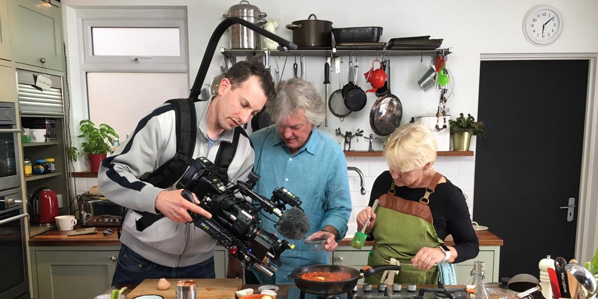

Here you can find a short list of James' most amazing recepies. Fruity morning pankakes and chinken pie included. and if you see something you like, why not get yourself the book! Makes it a whole lot easier to cook than just looking at a picture.
Beyond the basic model of fried egg between slices of bread, many common sandwiches have variations that include a fried egg in addition to bacon, sausage, cheese, black pudding, cold cuts, or as another topping to a hamburger.

A great pancake recipe that the kids can make. Be sure to get mum or dad’s help.
Do you love Chipotle, but you're tired of paying for carry-out? This is truly the easiest burrito recipe to make at home -- and they're freezer-friendly!
James' Chicken tikka masala, a dish consisting of marinated boneless chicken pieces that are traditionally cooked in a tandoor and then served in a subtly spiced tomato-cream sauce.
Caramel custard is a custard dessert with a layer of clear caramel sauce, also known as a Flan. But we don't use that word here.
(Chicken) Pot Pies are said to have originated in the Neolithic Age around 9500 B.C. by discoveries made by archaeologists. Can you imagine finding a 12000 year old pie? Must be very moldy.
Forgo the fry basket in favor of salt-baked shellfish dipped in tangy comeback sauce. However this forgo shrimp is with pasta. And without a basket. Which kind of makes the Forgo name redundant.

It is a burger.
The raan is not a mere roast leg of mutton. And even on Indian menus, it is often called a leg of lamb even though this is usually a bare-faced lie. ... In reality, a classic raan is never made with lamb. This one is though.
A coffee-flavoured Italian dessert. It is made of ladyfingers (savoiardi) dipped in coffee, layered with a whipped mixture of eggs, sugar, and mascarpone cheese, flavoured with cocoa
Pad Thai is a Thai dish of stir-fried rice noodles with eggs, vegetables and tofu in a sauce of tamarind, fish, dried shrimp, garlic, red chilli pepper and sugar.
is a flat and expanded pasta sheet, traditionally made in Italy with Parmigiano-Reggiano, Béchamel sauce, and a meat-based sauce. But come on, Everynbody has had one at some point in their lives.